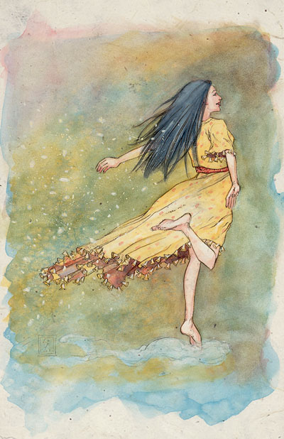
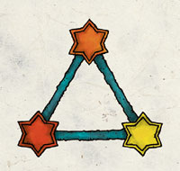

黎儿拉 Lliira（欢乐女神）

别称：喜悦女士 Our Lady of Joy，喜乐使者 Joybringer，欢乐夫人 Mistress of the Revels
圣徽：三颗不同颜色（黄，橙，红）的六芒星组成的正三角形

居住界域：明水之域 Brightwater
阵营：混乱善良 CG
神职：欢乐 joy，幸福 happiness，舞蹈 dance，节日欢庆 festivals，自由 freedom
信徒：吟游诗人，舞者，表演艺人，诗人，狂欢者，歌手
牧师阵营：中立善良 NG，混乱善良 CG，混乱中立 CN
神域：混乱 Chaos，媚惑 Charm，家庭 Family，善良 Good，旅行 Travel
喜好武器：喜乐火花 Sparkle（手里剑 shuriken）
黎儿拉是一位不停舞动的女神，她代表着无数的歌谣、是激励诗词歌曲创作的跃动灵感、也是生命中各种欢乐自由的体验与惊奇。她较不常直接在尘世中现身，而是在梦境中拜访她最虔诚的信徒，教导他们无忧无愁的快乐，让他们知道没有什么烦恼可让他们远离「快乐之舞」（Elysian Rigadoon）－一种将欢乐置于所有事务之上的哲学观点。
黎儿拉的牧师（被称为「喜乐使者」Joybringer）有各种不同的类 型，从轻忽的调情者到偏离正常生活的享乐主义者皆有。但他们心地善良，且将快乐的重要性置于所有事物之上。他们通常都极端虔诚，且在费伦各地都颇受欢迎， 被视为欢乐的「带原者」。其神殿常藉由举行盛大的庆典以筹募捐款，然后再将募得款项投入各种看似毫无事先规划的用途－比如集中美化一块公共区域，或砸大钱 为严肃的地方领主举办惊奇宴会。在文明开化的地区，黎儿拉的喜乐使者都广受赞助与支持，甚至是该地区中最受欢迎的牧师；但在叫黑暗凶险或未开化的地区，黎 儿拉的信仰便饱受打击抑制－只因在大环境（不论是自然或人为）的压迫下，轻忽妄动只会带来死亡。然而（出于好奇心），这种挫折只会更加鼓励喜乐使者们去寻 找这种地区，希望能藉由欢乐的舞步或轻扬动听的歌声带来快乐与喜悦。
喜乐使者为黎明的到来而为所有的事物感到满心喜悦，并在一天的新生时 刻向欢乐女士祈祷以获得神术。几乎每个与邪恶信仰无关的假日都是教会举办庆典的理由。在最神圣的庆典开始之前，会先进行一个名为「舍弃暴戾」 （Swords Cast Down）的仪式－将两把以上的武器丢在地上，而后用大量的鲜花将之掩埋。许多黎儿拉的牧师都会兼职成为吟游诗人。
历史/与众神的关系 History/Relationship：
歌 唱之神密黎尔（Milil）是黎儿拉在费伦神系中最为亲密的朋友，�k们一起共享表演的灵感火花。财富女神渥金（Waukeen）曾经是黎儿拉另一位亲密的 盟友，当商贾之友（渥金的别称）在动荡时期中失踪后，许多不坚定的牧师逐渐转而信奉欢乐女士。然而，当渥金回归之后，财富女神妒忌地试图抢回这些从前的信 徒－此举已在两位前任伙伴之间造成明显的嫌隙。当位于沙尔刚特城（Selgaunt）的喜乐大祭司克兰娜�B安杰罗丝（Chlanna Asjros，当黎儿拉于动荡时期谪落费伦大陆时，她曾是欢乐女神的爱人）被当地劳微塔（Loviatar，折磨与苦楚女神）教派的势力谋杀后，喜乐使者 们在行动方针也随之深受影响。在黎儿拉的授意下，信徒们组成一个名为「猩红伶人」（Scarlet Mummers）的暗杀教团，在费伦大陆上四处巡回表演，以精巧致命的舞蹈为掩饰，利用暗藏利刃的舞鞋（blade boot）取走痛楚少女信徒的生命。
教义 Dogma：
生 命中的每一天都是「快乐之舞」的一下舞步，那是一支由充满喜乐、无忧无虑的生命所组成舞蹈。努力寻找快乐，并与他人一同分享。生命的飨宴是由众人共享，也 是由失落者、孤独者、流放者、违法者、甚至是你的仇敌所共同参与的庆典。让所有人都能依循内心的渴望而行－包括你自己。
--
资料来源：费伦大陆信仰与神系《Faiths & Pantheons》
译者：一凡